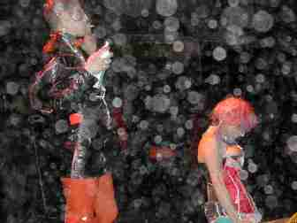

| August 2005 |
PRIDE BY NIGHT
Lørdag den 13. august er der for en gangs skyld homofester nok at vælge imellem. Barometer giver overblik over de mange tilbud - både de officielle og de alternative.
 Team Plastique, som optræder til dunst-festen Private Parts, er fotograferet af 2Rosa. |
Hvorfor skal man komme til netop jeres fest? ”Du skal komme til vores fest, hvis du gerne vil opleve noget specielt, som man ellers ikke ville kunne opleve i København. Vores tema er jo kønsdele og undertemaet er black leather og fetish, og det er jo altid et godt oplæg til fest, fortæller Dennis Agerblad fra dunst.
Hvem er det for? ”Festen er for både mænd og kvinder i alle aldre, som har lyst til en anderledes oplevelse”.
Hvilken type musik vil der være? ”Der vil være dj’s, der spiller elektronisk musik. Hos os er der ingen hitlistemusik eller dragshows – hvis der er sang, er det live”.
Hvad skal man medbringe? ”Man må gerne medbringe en masse læder og gummiudstyr, gasmasker og den slags. Og mændene gør klogt i at medbringe gummi og glidecreme, og så kan kvinderne jo tage femidomer med”.
Er der nogen specielt event vi kan glæde os til? ”Ja, der kommer flere forskellige kunstnere og performer. Blandt mange andre kommer Team Plastique fra Berlin, som synger mens de spiller tennis med en ananas og smører sig ind i vingummi og den slags”.
De andre fester:
Boys Pride Party, Pumpehuset København
Female Pride Party, Hal-D København
Ungdomsfest, Teglgårdstræde København
Gaymonk Party, Studenterhuset København
Army Night, Pan Club København
SLM Pride Night, SLM København
Gayfriendly Clubbing, Cafe Paradis Århus
Forf. Christian Rasmussen, Søren Bygbjerg
Læs hele artiklen her: panbladet.dk/artikel/350
Print denne side